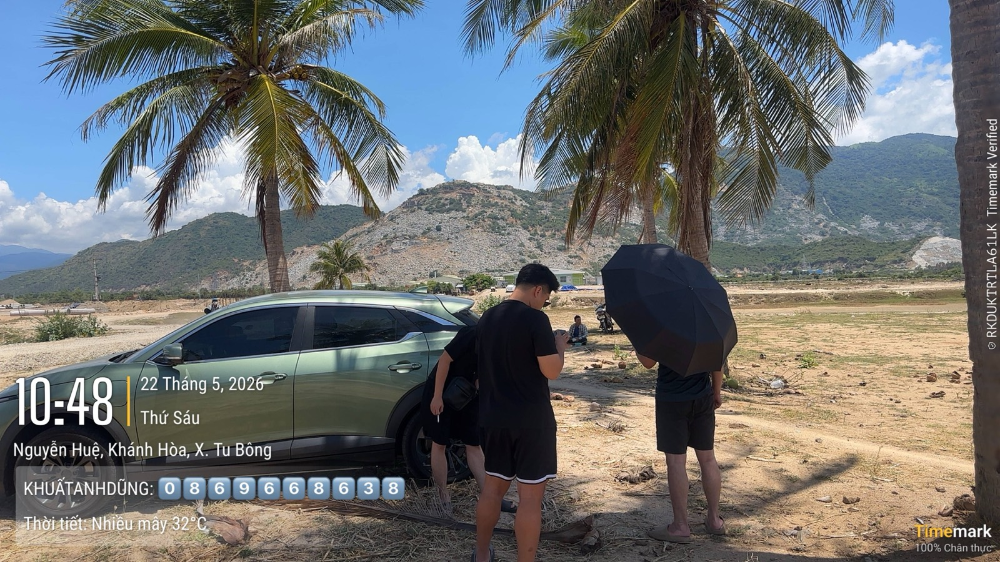

Trước khi hỏi giá một toà khách sạn: 6 thứ tôi soi ở hiện trường và trên tờ sổ
Ở bài trước tôi viết về câu hỏi công suất phòng và vận hành. Bài này là nửa còn lại: toà nhà và tờ giấy. Đầu tháng 10 tôi đi xem một toà khách sạn nhiều tầng ở Nha Trang cùng một người anh trong nghề. Giá chào nghe rất rẻ. Đi hết buổi chiều, tôi hiểu vì sao giá chào chỉ là con số cuối cùng nên nhìn tới, chứ không phải con số đầu tiên.

Ảnh tư liệu. Với một toà nhà đang kinh doanh, nửa câu trả lời nằm ở hiện trường, nửa còn lại nằm trên tờ sổ.
Dưới đây là 6 thứ tôi giờ luôn soi trước, theo đúng thứ tự tôi làm. Không thứ nào cần đến bảng giá.
1. Lộ giới: đường hiện trạng không phải đường quy hoạch
Con đường trước mặt toà nhà hôm nay rộng bao nhiêu mét không nói lên nhiều. Cái cần biết là đường đó theo quy hoạch rộng bao nhiêu, và chỉ giới đường đỏ chạy qua chỗ nào trên khu đất. Một toà cao tầng mà bị mở đường cắt vào phần trước thì bài toán khác hẳn.
Tờ sổ đôi khi đã vẽ sẵn câu trả lời: nhiều sổ thể hiện đường quy hoạch và ranh đất đã lùi sát chỉ giới. Khi đó phần đất trước mặt (giữa ranh sổ và mép đường) không thuộc diện tích sổ. Việc còn lại phải làm ở hiện trường: xem sảnh, bậc tam cấp, mái che có đang nằm trên dải đất ngoài sổ đó không. Muốn chắc hơn nữa thì xin văn bản cung cấp thông tin quy hoạch.
2. Loại đất: đất kinh doanh không phải đất ở
Khá nhiều toà khách sạn nằm trên đất cơ sở sản xuất, kinh doanh, không phải đất ở. Điều này có hai mặt:
- Mặt tốt: đúng công năng làm khách sạn, kinh doanh lưu trú.
- Mặt cần nói rõ: đừng lấy giá đất ở mặt tiền cùng tuyến ra so ngang hàng để kết luận "rẻ". Và nếu người mua có ý định vừa kinh doanh vừa ở luôn, thì về mặt giấy tờ đây không phải nhà ở.
3. Thế chấp cũ: đã có dòng xoá chưa
Lật tới trang ghi biến động phía sau sổ. Toà nhà kinh doanh lâu năm thường từng được thế chấp ngân hàng. Câu hỏi đơn giản: có dòng đăng ký thế chấp nào mà không thấy dòng xoá đi kèm không? Nếu có, phải hỏi cho ra trước khi bàn tới tiền cọc. Đây là thứ đọc mất hai phút nhưng hay bị bỏ qua nhất, vì ai cũng mải nhìn trang đầu.
4. PCCC: lúc cải tạo mới là lúc dễ vướng
Đây là phần tôi đọc kỹ nhất, vì trước khi làm môi giới tôi có 9 năm làm kỹ sư cơ điện. Nhiều người nghĩ toà đã nghiệm thu PCCC từ ngày xây là xong. Nhưng theo Phụ lục III Nghị định 105/2025, khách sạn, chung cư cao từ 7 tầng hoặc tổng diện tích sàn từ 3.000 m² thuộc diện phải thẩm định thiết kế PCCC khi cải tạo hoặc thay đổi công năng sử dụng. Điều 6 của nghị định còn coi việc thay đổi phân khu chức năng chính bên trong công trình là trường hợp phải thẩm định lại.
Nói đời thường: định gộp phòng, đổi khách sạn thành căn hộ cho thuê, biến sảnh thành quầy bar… thì có thể phải áp quy chuẩn mới cho phần cải tạo. Một toà cao mà mặt tiền hẹp, chỉ có một thang bộ, là chỗ tôi dừng lại lâu nhất.
Thêm một thay đổi của năm nay: theo các báo đưa tin về Nghị quyết 66.18/2026/NQ-CP, từ 1/7/2026 bỏ thủ tục Công an kiểm tra công tác nghiệm thu PCCC. Chủ công trình tự chịu trách nhiệm nhiều hơn. Với người mua, điều này nghĩa là đừng chờ ai kiểm tra hộ mình. Hãy xin xem hồ sơ thẩm duyệt, nghiệm thu PCCC gốc, biên bản kiểm tra gần nhất. Nếu định cải tạo, mời một đơn vị PCCC có chứng chỉ khảo sát trước khi chốt giá.
5. Đọc dòng tiền SAU cải tạo, không phải giá chào
Đây là bài học tôi nhận từ người anh đi cùng hôm đó. Anh là người đang tự mua, cải tạo và cho thuê nhiều bất động sản ở Nha Trang. Đứng giữa một dãy phòng nhỏ, anh nói:
"Phòng bé, chuyển căn hộ thì phải đập thông phòng rất phức tạp."
Giá tính trên mỗi phòng rẻ có thể là một cái bẫy nếu khung nhà không đổi công năng được: phòng nhỏ thì chỉ bán được giá phòng nhỏ. Cách anh tính là cộng hết chi phí cải tạo cần làm (PCCC, chống thấm mái, nội thất phải thay) vào giá mua để ra tổng vốn thật. Sau đó đặt tổng vốn đó cạnh dòng tiền thật sau cải tạo, rồi mới gọi là rẻ hay đắt. Có những trường hợp, với cùng số tiền đó, phương án mua đất rồi tự xây mới lại hợp lý hơn.
6. Tài sản trên 20 tỷ: để ngân hàng làm trọng tài khi giao tiền
Lời dặn thứ hai của người anh đó, về cách giao tiền:
"Bắt buộc phải có ngân hàng đứng ra làm trọng tài phong toả / giải ngân khi sang tên ra sổ mới."
Lý do: với tài sản đứng tên doanh nghiệp, từ lúc giao tiền tới lúc ra sổ mới có một khoảng trống khá dài (thủ tục công ty, thuế, xoá thế chấp). Tiền nằm trong tài khoản phong toả do ngân hàng giữ, chỉ giải ngân khi đủ điều kiện sang tên. Nếu bên bán vướng gì, người mua không mất tiền. Còn kiểu đặt cọc công chứng rồi giao tiền ngay, theo lời anh, là "dính pháp lý rất nguy hiểm". Thú thật, tôi vẫn đang tìm hiểu ngân hàng nào ở Nha Trang làm dịch vụ này và phí bao nhiêu, nên chưa nói con số được.
Thêm một câu hỏi: tài sản đứng tên cá nhân hay công ty?
Tuần trước, ở buổi học về quản trị rủi ro pháp lý của lớp CEO Nha Trang 02, Luật sư Nguyễn Văn Tài trả lời một học viên đang cho thuê nhiều căn hộ dưới dạng hộ kinh doanh. Theo luật sư, hộ kinh doanh không có tư cách pháp nhân và không được khấu trừ chi phí đầu vào như xây dựng, khấu hao, lương người vận hành. Còn đưa tài sản và hợp đồng cho thuê vào công ty thì vừa xuất được hoá đơn hợp pháp, vừa khấu trừ được chi phí.
Với người mua khách sạn hay toà căn hộ để làm dòng tiền, đây là câu nên hỏi trước khi chọn đứng tên, không phải sau. Mỗi trường hợp mỗi khác, nên tôi chỉ dừng ở việc gợi câu hỏi. Phần trả lời cho ca của anh chị, hãy hỏi luật sư hoặc kế toán thuế.
Tóm lại: 6 câu hỏi trước khi hỏi giá
| # | Câu hỏi | Soi ở đâu |
|---|---|---|
| 1 | Đường quy hoạch rộng bao nhiêu, công trình có lấn ra ngoài sổ không? | Sơ đồ trên sổ + hiện trường |
| 2 | Đất ở hay đất kinh doanh, có hợp mục đích của mình không? | Trang đầu sổ |
| 3 | Thế chấp cũ đã có dòng xoá chưa? | Trang biến động sau sổ |
| 4 | Định cải tạo thì có chạm ngưỡng thẩm định lại PCCC không? | Hồ sơ PCCC gốc + khảo sát |
| 5 | Tổng vốn sau cải tạo so với dòng tiền thật? | Hiện trường + sổ sách vận hành |
| 6 | Giao tiền qua đâu, đứng tên ai? | Ngân hàng + luật sư |
Bài viết là kinh nghiệm cá nhân và tổng hợp từ văn bản pháp luật hiện hành, không phải tư vấn pháp lý hay thuế cho một trường hợp cụ thể. Ngưỡng PCCC nêu theo Phụ lục III Nghị định 105/2025; thông tin về Nghị quyết 66.18/2026 tổng hợp theo báo chí. Quy định có thể được sửa đổi, anh chị nên đối chiếu văn bản chính thức và hỏi luật sư, đơn vị PCCC có chứng chỉ trước khi ra quyết định.
"Rồi, ngày mới tốt lành nhé."
Sống tử tế · Kiếm tiền hạnh phúc · Cho đi giá trị
Đang xem một toà khách sạn hay căn hộ dịch vụ ở Nha Trang?
Gửi tôi những gì anh chị đang có. Tôi giúp soi trước 6 điểm trên, nói thật chỗ nào ổn, chỗ nào cần hỏi thêm trước khi bàn giá.
Nhắn Zalo — 0869 668 638